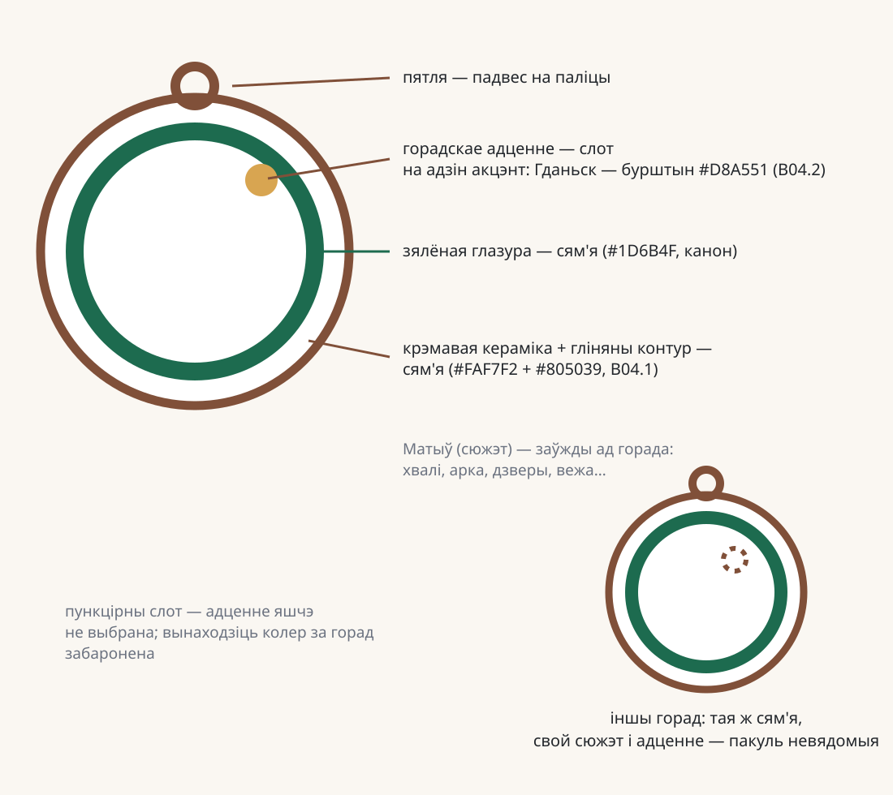

Анатомія сям'і

Правіла пераносу: крэмавая кераміка, гліняны контур (B04.1), зялёная глазура і пятля — заўсёды аднолькавыя. Сюжэт матыву і адно дадатковае гарадское адценне выбірае горад (Гданьск — бурштын B04.2). Другога акцэнту на прадмеце не бывае. Тэксту на прадмеце няма — назва жыве ў картцы.